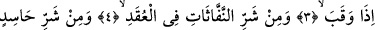
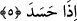
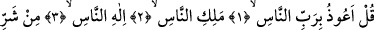
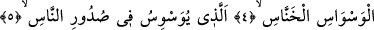
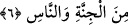
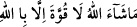
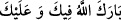

“De ki: Yarattığı şeylerin şerrinden, karanlığı çöktüğü zaman gecenin şerrinden,
düğümlere üfürüp büyü yapan üfürükçülerin şerrinden ve kıskandığı vakit kıskanç
kişinin şerrinden sabahın Rabbine sığınırım!” (el-Felak, 113/1-5)
ve Kul eûzü bi-rabbi’n-nâs’ı;
“De ki: İnsanların kalplerine vesvese sokan, (insan Allah’ı andığında) pusuya
çekilen cin ve insan şeytanının şerrinden insanların Rabbine, insanların Melîkine
(mutlak sahip ve hâkimine) insanların İlâhına sığınırım!” (en-Nâs, 114/1-6)
okuyup üfler, başından, yüzünden ve vücudunun ön tarafından başlayarak ulaşabildiği
yerlere kadar ellerini sürer ve bunu üç defa yapardı.”[70]
Böyle yapmanın sihir, nazar değmesi, çeşitli haşereler ve diğer hastalık ve yaralardan
emin olmaya vesile olduğu söylenmiştir.
Bir şey görüp de ondan hoşlanan ve nazar değmesinden endişe eden kimsenin “
Allah’ın dediği olur ve kuvvet ancak Allah’ın lütuf ve ihsânıyladır
demeleri sonra da “
Allah sana mübarek eylesin, hayır ve bereket
versin!” diyerek bereket dilemesi sünnettir.
Dünyada canlıların en tuhafı şu üçüdür:
1- Hayâtü’l-hayevân’da belirtildiği gibi güzel olduğu için nazar değebilir endişesiyle
gündüzleri ortalarda gözükmeyen baykuş. Kendisinin en güzel hayvan olduğunu
düşündüğü için sadece geceleri ortaya çıkar.
2- Yere iki ayağıyla değil de bir ayağıyla basan turna. Ayağını bastığı zaman da yerin
çökeceği endişesiyle ağırlığını ayağına vermez.
3- Nehir ve kaynak sularının yakınlarında yaşayan, turnaya benzer “Mâlik hazîn” adlı
bir kuştur. Su biter korkusuyla doyasıya su içmez. Bu yüzden susuzluktan ölür.
Bunun bir benzeri de Taberistan’da yaşayan bir böcektir. Gündüz bir-üç miskal
ağırlığında olur. Gece mum gibi ışık saçar. Gündüz uçar ve aslında iki kanadı olmadığı
halde yeşil ve düz kanatları varmış gibi görünür. Toprakla beslenir. Fakat toprak biter
de açlıktan helak olurum korkusuyla doyasıya toprak yemez.